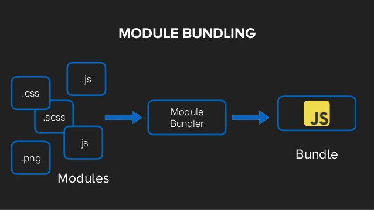

- Module Bundlers 
Es un paquete de módulos JavaScript.
- Preprocesadores
Un preprocesador de CSS es una herramienta que nos permite escribir pseudo-código CSS que luego será convertido a CSS real. Ese pseudo-código se conforma de variables, condiciones, bucles o funciones. Podríamos decir que tenemos un lenguaje de programación que genera CSS..